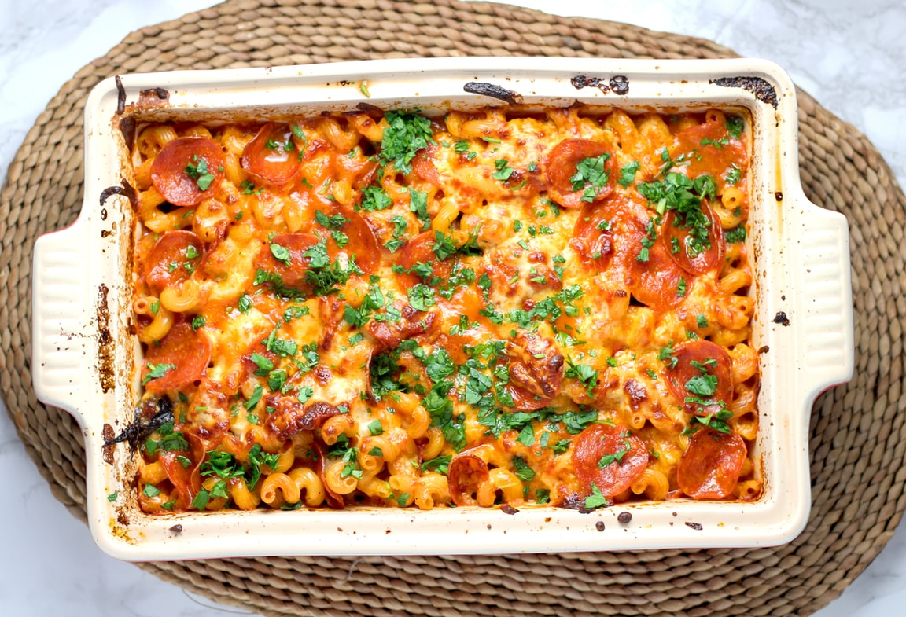

Lasanha de frango

| Denise Paz | 60 minutos | 8 porções |
Igredientes
- 1 Tomate
- 1 Cebola
- 2 dentes de Alho
- 3 colheres de Farinha de trigo
- 3 xícaras de Leite
- 1 pacote Massa de lasanha pronta
- Molho pronto a gosto
- 300g de Presunto
- 300g de Queijo
- 1 pacote de Batata palha
- Sal a gosto
- 1 peito de frango médio
Preparo
Preparação do molho vermelho:
- Cozinhe o peito de frango
- Após o cozimento defie o frango
- Separe uma panela e acrescente o tomate e a sebola picados
- Adicione o molho pronto e deixe cozinhar
- Após o cozimento adicione o peito de frango desfiado e reserve
Preparação do molho branco
- Separe uma panela e adicione as colheres de farinha de trigo
- Adicione o leite e deixe engrossar
- Frite em separado o alho e acresente ao restante da mistura
Montagem
- Separe uma forma
- Adicione camadas de forma alternada. Molho vermelho, massa de lasanha, porção de queijo e molho branco, até completar a forma
- Por último adicione uma camada de molho branco e vermelho juntas
- Acresente a batata palha
- Leve ao forno pré-aquecido a 180º
Se estiver com dificuldade
Preparamos um vídeo para ensinar a fazer essa receita